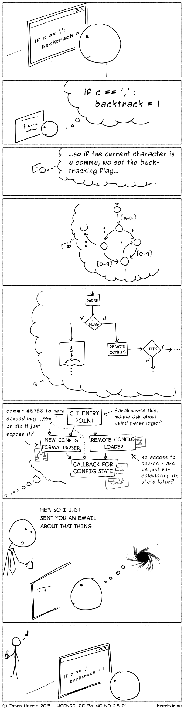

Conventions
This section deals with how to apply code conventions, and is geared towards new team members.
How to be a good contributor
To be a good contributor, you must be able to follow direction.
If you come across a solution you cannot solve, or not sure on how to approach a problem. Then use the steps below, before you ask for help. It is totally okay to ask for help, but you are required to make an effort on solving it on your own.
This way, when you do ask for help - you can show what you tried, which resources on the subject you found and what your goal is. Balance the time for this. There's no defined limit on how much time you should use.
No one here knows everything. We're humans, not Google.
Example Troubleshooting Steps
Use these steps as a rule of thumb, when troubleshooting an issue.
Case
When a user is on the login page, but not currently logged in - and then tries to login after 2 hours without refreshing the page. A HTTP 500 error is being returned.
Step 1 - Analysing logs
Anything that returns a status code between 400 and 503 - means that something threw an exception in the backend. So the first thing to do is checking the application log. You can locate it here:
storage/logs/laravel-YEAR-MONTH-DATE.log
In this particular case it could show the following:
[2019-010-22 18:27:00] local.ERROR: exception 'Illuminate\Session\TokenMismatchException' in /home/vagrant/code/vendor/compiled.php:2550
Stack trace:
#0 /home/vagrant/code/app/Http/Middleware/VerifyCsrfToken.php(17): Illuminate\Foundation\Http\Middleware\VerifyCsrfToken->handle(Object(Illuminate\Http\Request), Object(Closure))
#1 /home/vagrant/code/vendor/compiled.php(9197): App\Http\Middleware\VerifyCsrfToken->handle(Object(Illuminate\Http\Request), Object(Closure))
#2 /home/vagrant/code/vendor/compiled.php(12377): Illuminate\Pipeline\Pipeline->Illuminate\Pipeline\{closure}(Object(Illuminate\Http\Request))
#3 /home/vagrant/code/vendor/compiled.php(9197): Illuminate\View\Middleware\ShareErrorsFromSession->handle(Object(Illuminate\Http\Request), Object(Closure))
#4 /home/vagrant/code/vendor/compiled.php(11067): Illuminate\Pipeline\Pipeline->Illuminate\Pipeline\{closure}(Object(Illuminate\Http\Request))
#5 /home/vagrant/code/vendor/compiled.php(9197): Illuminate\Session\Middleware\StartSession->handle(Object(Illuminate\Http\Request), Object(Closure))
#6 /home/vagrant/code/vendor/compiled.php(12079): Illuminate\Pipeline\Pipeline->Illuminate\Pipeline\{closure}(Object(Illuminate\Http\Request))
#7 /home/vagrant/code/vendor/compiled.php(9197): Illuminate\Cookie\Middleware\AddQueuedCookiesToResponse->handle(Object(Illuminate\Http\Request), Object(Closure))
#8 /home/vagrant/code/vendor/compiled.php(12027): Illuminate\Pipeline\Pipeline->Illuminate\Pipeline\{closure}(Object(Illuminate\Http\Request))
#9 /home/vagrant/code/vendor/compiled.php(9197): Illuminate\Cookie\Middleware\EncryptCookies->handle(Object(Illuminate\Http\Request), Object(Closure))
#10 /home/vagrant/code/vendor/compiled.php(2589): Illuminate\Pipeline\Pipeline->Illuminate\Pipeline\{closure}(Object(Illuminate\Http\Request))
#11 /home/vagrant/code/vendor/compiled.php(9197): Illuminate\Foundation\Http\Middleware\CheckForMaintenanceMode->handle(Object(Illuminate\Http\Request), Object(Closure))
#12 /home/vagrant/code/vendor/platform/installer/src/Middleware/Installer.php(57): Illuminate\Pipeline\Pipeline->Illuminate\Pipeline\{closure}(Object(Illuminate\Http\Request))
#13 /home/vagrant/code/vendor/compiled.php(9197): Platform\Installer\Middleware\Installer->handle(Object(Illuminate\Http\Request), Object(Closure))
#14 [internal function]: Illuminate\Pipeline\Pipeline->Illuminate\Pipeline\{closure}(Object(Illuminate\Http\Request))
#15 /home/vagrant/code/vendor/compiled.php(9188): call_user_func(Object(Closure), Object(Illuminate\Http\Request))
#16 /home/vagrant/code/vendor/compiled.php(1996): Illuminate\Pipeline\Pipeline->then(Object(Closure))
#17 /home/vagrant/code/vendor/compiled.php(1983): Illuminate\Foundation\Http\Kernel->sendRequestThroughRouter(Object(Illuminate\Http\Request))
#18 /home/vagrant/code/public/index.php(68): Illuminate\Foundation\Http\Kernel->handle(Object(Illuminate\Http\Request))
#19 {main}
First we see the Illuminate\Session\TokenMismatchException is being thrown.
But the interesting part is looking at the stack. As Laravel use the excellent monolog/monolog library, we're getting tons of hints of where the issue could be.
The interesting line here is the one beginning with #0
#0 /home/vagrant/code/app/Http/Middleware/VerifyCsrfToken.php(17): Illuminate\Foundation\Http\Middleware\VerifyCsrfToken->handle(Object(Illuminate\Http\Request), Object(Closure))
It explains that the middleware responsible for verifying the Cross Site Request Forgery token has failed the request
Read more about CSRF
So now we have found what's wrong. Now the question is, how do we fix it?
Say we're not finding relevant links on Google, or unsure about how to mitigate it. Then now is the perfect time to ask a team member or maintainer for help.
As we have found a way on how to reproduce the error and have relevant logs.
Step 3 - Asking for help in a meaningful way
This might be obvious.
But in the heat of the moment you could be tempted to write I have a problem, can you come and fix it?
or you send a screenshot of the 500 page with no context.
This isn't helpful to anyone. Context switching is extremely difficult for anyone.

Instead go on Slack, and preferably write in the #general channel. Someone else might be able to answer you. While you're waiting for a reply, go work on something else. In 99.9% of the tasks we have, there's multiple things to do.
Requesting help
If the issue is a task in Gitlab. Add a link to the task.
Hi. I'm currently facing an issue regarding authenticating on the
https://homestead.test/auth/loginroute. When i input a known good username/password combination, i get a 500 error. I checked the laravel.log file, and i can see aIlluminate\Session\TokenMismatchExceptionexception is being thrown.In
resources/views/auth/login.blade.phpthe csrf token is being addedThis is the exception stack being thrown:
[2019-010-22 18:27:00] local.ERROR: exception 'Illuminate\Session\TokenMismatchException' in /home/vagrant/code/vendor/compiled.php:2550
Stack trace:
0 /home/vagrant/code/app/Http/Middleware/VerifyCsrfToken.php(17): Illuminate\Foundation\Http\Middleware\VerifyCsrfToken->handle(Object(Illuminate\Http\Request), Object(Closure))
1 /home/vagrant/code/vendor/compiled.php(9197): App\Http\Middleware\VerifyCsrfToken->handle(Object(Illuminate\Http\Request), Object(Closure))
2 /home/vagrant/code/vendor/compiled.php(12377): Illuminate\Pipeline\Pipeline->Illuminate\Pipeline{closure}(Object(Illuminate\Http\Request))
3 /home/vagrant/code/vendor/compiled.php(9197): Illuminate\View\Middleware\ShareErrorsFromSession->handle(Object(Illuminate\Http\Request), Object(Closure))
4 /home/vagrant/code/vendor/compiled.php(11067): Illuminate\Pipeline\Pipeline->Illuminate\Pipeline{closure}(Object(Illuminate\Http\Request))
5 /home/vagrant/code/vendor/compiled.php(9197): Illuminate\Session\Middleware\StartSession->handle(Object(Illuminate\Http\Request), Object(Closure))
6 /home/vagrant/code/vendor/compiled.php(12079): Illuminate\Pipeline\Pipeline->Illuminate\Pipeline{closure}(Object(Illuminate\Http\Request))
7 /home/vagrant/code/vendor/compiled.php(9197): Illuminate\Cookie\Middleware\AddQueuedCookiesToResponse->handle(Object(Illuminate\Http\Request), Object(Closure))
8 /home/vagrant/code/vendor/compiled.php(12027): Illuminate\Pipeline\Pipeline->Illuminate\Pipeline{closure}(Object(Illuminate\Http\Request))
9 /home/vagrant/code/vendor/compiled.php(9197): Illuminate\Cookie\Middleware\EncryptCookies->handle(Object(Illuminate\Http\Request), Object(Closure))
10 /home/vagrant/code/vendor/compiled.php(2589): Illuminate\Pipeline\Pipeline->Illuminate\Pipeline{closure}(Object(Illuminate\Http\Request))
11 /home/vagrant/code/vendor/compiled.php(9197): Illuminate\Foundation\Http\Middleware\CheckForMaintenanceMode->handle(Object(Illuminate\Http\Request), Object(Closure))
12 /home/vagrant/code/vendor/platform/installer/src/Middleware/Installer.php(57): Illuminate\Pipeline\Pipeline->Illuminate\Pipeline{closure}(Object(Illuminate\Http\Request))
13 /home/vagrant/code/vendor/compiled.php(9197): Platform\Installer\Middleware\Installer->handle(Object(Illuminate\Http\Request), Object(Closure))
14 [internal function]: Illuminate\Pipeline\Pipeline->Illuminate\Pipeline{closure}(Object(Illuminate\Http\Request))
15 /home/vagrant/code/vendor/compiled.php(9188): call_user_func(Object(Closure), Object(Illuminate\Http\Request))
16 /home/vagrant/code/vendor/compiled.php(1996): Illuminate\Pipeline\Pipeline->then(Object(Closure))
17 /home/vagrant/code/vendor/compiled.php(1983): Illuminate\Foundation\Http\Kernel->sendRequestThroughRouter(Object(Illuminate\Http\Request))
18 /home/vagrant/code/public/index.php(68): Illuminate\Foundation\Http\Kernel->handle(Object(Illuminate\Http\Request))
19 {main}
Answering requests
Now someone else has the chance to look over what's going on.
If that person is able to spot the issue, you could get an answer like:
Oh yeah. There's a time limit on CSRF tokens. I can see in the ticket it happens after 3 hours. It's a necessary security measure. I'd solve it by redirecting the user, with a warning message to try again.
Go to the ExceptionHandler in
app/Exceptions/Handler.phpAnd add the following code to therender() methodpublic function render() { if ($exception instanceof TokenMismatchException) { return response()->redirect('login')->with('status', 'Token expired, please try again.'); } }
You might be asked to provide additional details to diagnose the issue.
But don't expect everyone to solve any issue. Work as a team, and figure out a solution.
If you don't get an answer within an hour, you should contact the project manager for guidance.